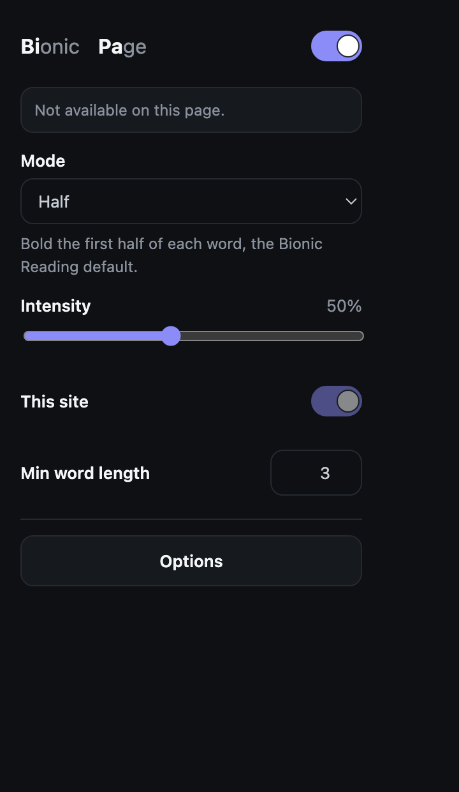
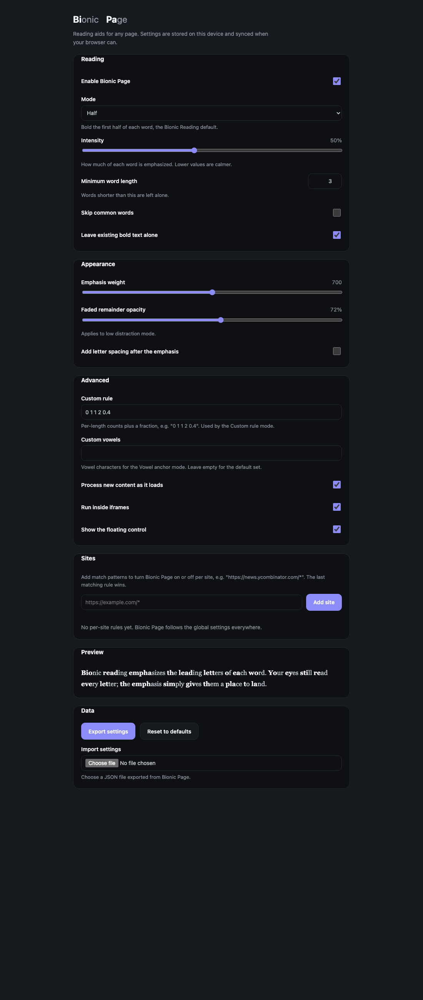
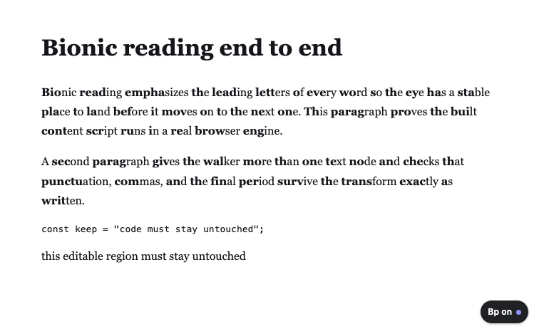

Walkthrough
How to use bionic-page
Install it once, then read any page normally. It takes about a minute to set up, and one action to turn it on or off. The store listings are not published yet, so this covers building both targets from source.
1. Install from source
Build once; the same source tree emits a correct Chrome manifest and Firefox manifest.
git clone https://github.com/srivtx/bionic-page
cd bionic-page && bun install
bun run build
Chrome or Edge
Open chrome://extensions, enable Developer mode, choose Load unpacked, and select the dist/chrome folder. Requires Chrome 116 or newer.
Firefox
Open about:debugging, choose This Firefox, then Load Temporary Add-on, and select dist/firefox/manifest.json. Requires Firefox 140 or newer.
2. First run
On a fresh install the extension writes the default settings and opens a short welcome page in a new tab. The defaults are the Half mode, intensity 0.5, and the floating control on. Nothing else is created and nothing is sent anywhere.
3. The popup
Click the bionic-page toolbar icon. The popup shows a master switch, a mode selector with a one-line description, an intensity slider from 0.2 to 0.9, a This site switch, a minimum word length field, and an Options button.
If the status line reports no readable text, the page keeps its text outside the DOM, as a PDF viewer or a canvas app does. There is nothing to transform, which is expected.

4. Per-site rules
The This site switch in the popup keeps the current site on or off. For anything broader, open Options and use the Sites section to add match patterns such as https://news.ycombinator.com/*. The last matching rule wins, and a rule can carry its own mode and intensity.

The options page holds every setting, grouped into six sections:
- Reading: enable, mode, intensity, minimum word length, skip common words, and leave existing bold text alone.
- Appearance: emphasis weight from 500 to 900, faded remainder opacity from 0.4 to 1, and optional letter spacing after the emphasis.
- Advanced: the custom rule, a custom vowel set, processing of new content, running inside iframes, and the floating control.
- Sites: the match-pattern list described above.
- Preview: a live sample that updates as you change values.
- Data: export your settings to JSON, import a file, or reset to defaults.
5. The floating control and the shortcut
The floating Bp button in the bottom-right corner toggles the page without opening anything; its dot and label show whether reading is on. It is hidden inside iframes and can be turned off in options. The keyboard shortcut Ctrl/Cmd + Shift + Y toggles the page you are on from anywhere.
6. A page transformed

Text is rewritten in place. Code blocks, form fields, editors, math, SVG, and navigation are left alone, and the transform runs once, then only over new content.
7. Turning it off again
Turning the effect off restores the original text nodes exactly, so no reload is needed. There are several ways to stop it:
- Press the shortcut or the floating control to toggle the current page for this session.
- Use the This site switch, or a match pattern, to keep a site off.
- Turn the master switch off to disable it everywhere.
- Remove the extension to delete its stored settings.
A page author can also opt an element out with data-bionic="off", and the walker skips anything marked aria-hidden="true".